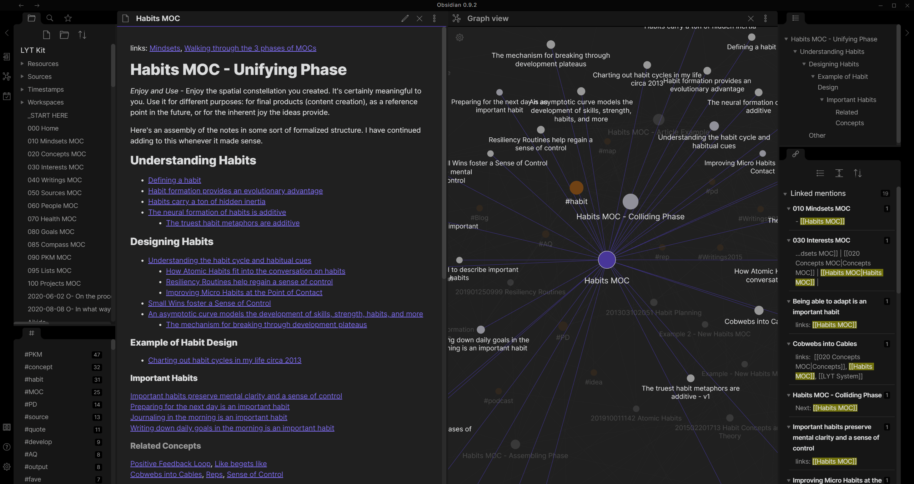
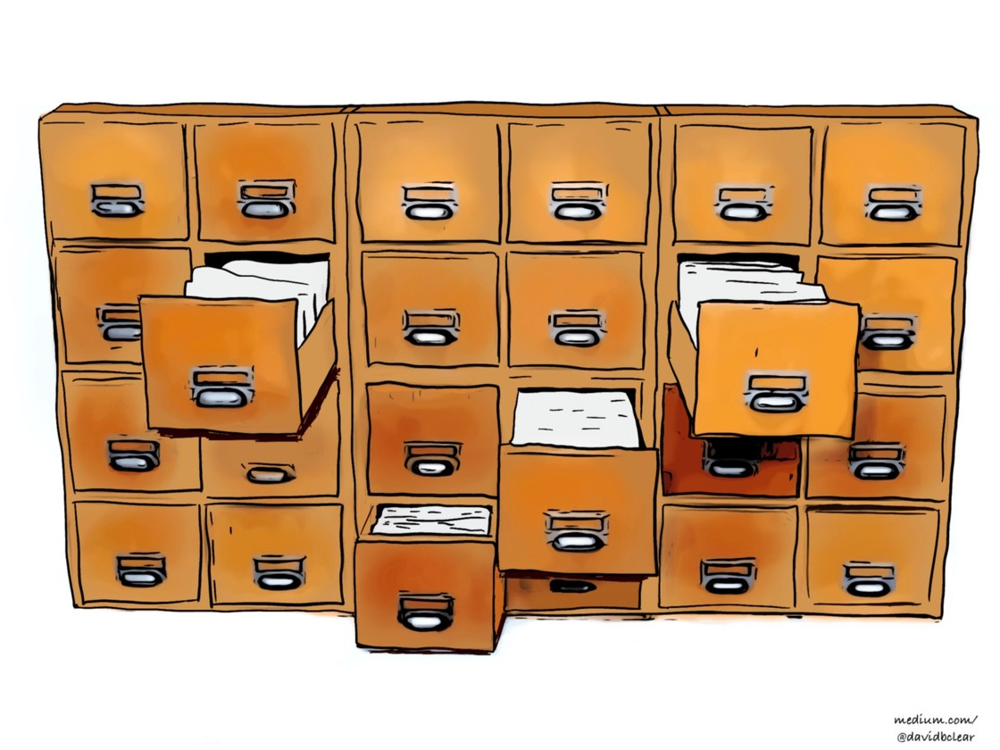
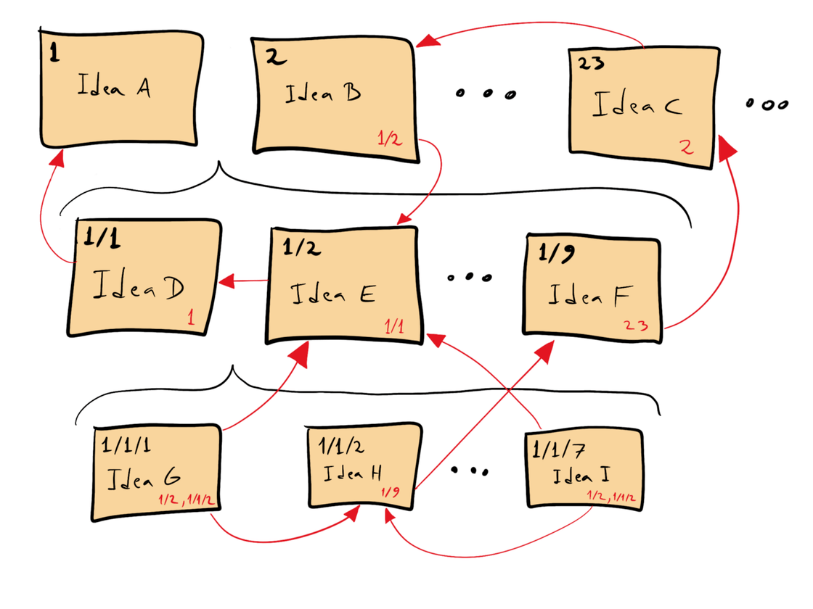
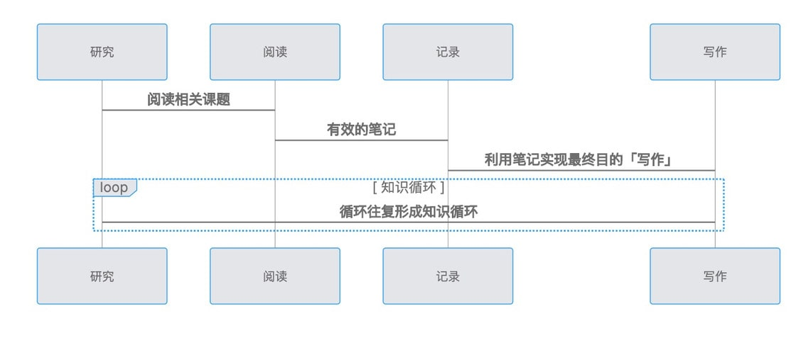
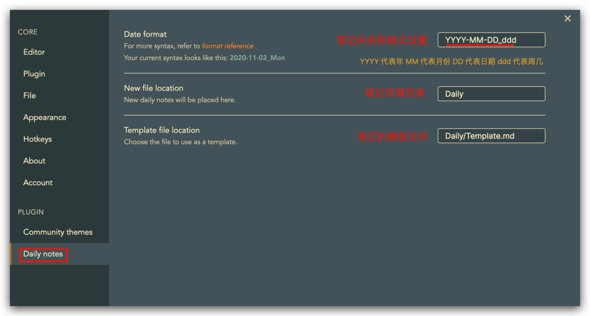

避免产生类似「付费了 = 学到了，买了 = 会了」的错觉
随着 Roam Research 工具的流行，越来越多的人开始了解到这种笔记管理方法(Zettelkasten)，其也被称为 卡片盒笔记法。虽然 Roam Research 非常强大且好用，但是每年的购买价格($15/month)还是有些高的，幸运的是，我们可以使用免费的 Obsidian 笔记软件。

1. 卡片笔记法
了解什么是 Zettelkasten 记忆法
德国学者 Niklas Luhmann(尼克拉斯·卢曼) 是德国当代重要的社会学家，其作为社会系统理论的创新者，一生中一共出版了 70 多本书和 400 多篇学术著作。卢曼在不借助计算机的情况下拥有如此大的产出，完全归功于他自己总结的一套笔记管理方法，Zettelkasten(slip box) 也被称为「卡片盒笔记法」或「卡片笔记法」。
实际上 Zettelkasten 就是在卢曼家里的一件家具，它由六堆四个木质抽屉组成，每个抽屉都堆满了纸条。在柜子里可以看到到处充满了纸条，在现代笔记管理软件中，这些纸条就相当于一篇篇笔记。这些笔记是自由的、独立的，每一张纸条(一篇笔记)都能独立说明一件事情。

- 现代笔记管理软件
- 文件夹：限制了笔记被发现大概率
- 打标签：难以管理且维护成本高
我们现在看到的很多笔记管理软件，都是使用 文件夹+打标签 的管理形式，将笔记存放在文件夹下面并对笔记打上不同的标签。看上去似乎没有问题，但是其严重限制了一篇笔记被发现的几率，阻碍创意或者灵感的产生。
- Zettelkasten
- 二次加工：知识库 + 知识图谱
- 卡片：要存储的「卡片」内容(关键语句+详细说明+示例)
- 索引：能够指向「卡片」的唯一编号(方便插入和关联)
每张「卡片」的左上角都有一个或多个「编号」，每个编号就是一个「索引」。而且，仔细观察你会发现这些编号，1 和 1/1 和 1/1/2 有着有着「层级关系」。 大量研究表明，非线性笔记比线性笔记更有利于学习，尤其适用图表和概念图，更能促使信息选择和组织。

2. 了解黑曜石
一款支持 Zettelkasten 笔记法的笔记管理软件
在 Obsidian 中「卡片」就相当于每一篇笔记，而「索引」就是双向链接([[]])，通过「双向链接」实现了 Zettelkasten 的使用方法，这样用起来高效和便捷，所以 Obsidian 的功能非常有利于我们进行知识循环。
- Obsidian 的核心
- **卡片(Topic)**：标题 + 内容
- **索引(Index)**：
Topic中的标题

Zettelkasten 是一套科学的行之有效的卡片式笔记管理法，它的重点是卡片和索引。将笔记用简洁的话语描述，放入「卡片」中，这样带来的好处是任何一张卡片都是独立、自由的存在，可以随意移动和删除，不会影响任何事情。并且通过「双向链接」的方式，在笔记之间建立连接关系，从而实现索引功能。
- 卡片使用原则
- 原子性
- 即最小力度的说明一个概念
- 想在任何一个地方引用这个概念都能用同一句话概括
- 在
Obsidian中更加强调Topic的标题要具备原子性 - 自主性
- 能够独立说明一件事，可以被独立理解
- 可以随意被移动、分离、连接和关联起来
- 原子性
有时候，我们需要将一个 Topic 中的一段话引入到当前 Topic 中，并且在展示样式中可以完整的展示这段话的「原文」，这个功能对于我们组织笔记的大纲非常有用。在 Obsidian 中没有「块引用」的概念，但是结合「话题引用」和「别名引用」可以间接实现类似「块引用」的功能。
- 块引用
- 话题引用
- 在一个笔记中，用
#号标记的内容就是话题 [[Obsidian知识训练利器#了解黑曜石]]
- 在一个笔记中，用
- 别名引用
- 有时双向链接引用的标题太长导致词不达意，可以使用
|符号 [[Obsidian知识训练利器#了解黑曜石|什么是黑曜石呢]]
- 有时双向链接引用的标题太长导致词不达意，可以使用
- 块引用
- 新版本中已经支持「块引用」了
[[Obsidian知识训练利器#^123075]][[Obsidian知识训练利器#^123075|这是一个简单的描述]]
- 话题引用
Obsidian 是一款非常优秀的 Zettelkasten 笔记管理软件，它利用现代软件技术，实现了的「卡片」和「索引」功能，当我们使用 Obsidian 做笔记的时候，由于软件能够很方便的建立「双向链接」，我们只需要不停地添加新笔记，并建立各种「双向链接」，最终我们的知识就会形成「知识图谱」。
- 第一步：新建一个 Topic
- 第二步：搜索相关话题笔记或者文章
- 第三步：对搜集到的相关内容进行摘录
- 第四步：编写文章大纲
- 第一遍：整理文章大纲
- 第二遍：编辑引用的内容
- 第五步：编辑文章
笔记越多，网越大，更容易从中找到内在的联系。当你带着问题或者一个想法去探索时，就会想人类大脑思考那样，从一个线索跳转到另一个线索，使我们的思维更加活跃，更会激发我们的创造性。借助 Obsidian 的优势，极大地拓宽我们的「知识边界」，做到真正有意义的「知识循环」。
3. 基本设置项
关于基础设置和使用介绍 - 相关必要的配置项
如果想了解 Obsidian 的功能特点，官方非常贴心的提供了《Obsidian Help》这个帮助文档，同时为了方便大家进行「交互式」体验其功能，默认还内置了 Obsidian Help 仓库，并且以上两个文档都会得到官方的持续更新，非常推荐大家阅读和使用。
- [1] 新建仓库
- 最好是将不同类型的笔记创建不同的仓库进行管理(互不影响)
- 工具具备了「云同步」的能力，存储目录可以设置为云盘地址
- [2] 核心插件
- 默认情况下，有些功能是关闭状态的，所以有需求可以开启对应功能
- 建议开启：斜杠命令、大纲、工作区、文件恢复、页面预览
- 选择开启：出链、幻灯片、星标、发布、同步、标签面板、模板输入
- [3] 日记插件
Calendar：日历Templater：根据模板脚本创建日记Natural Language Dates：日期字符串转化为双向链接(Cmd+Y)Review：自动化任务回顾QuickAdd：模板增强工具(集大成者|日记首选)
- [4] 推荐插件
Folder Note：为文件夹内的笔记生成卡片样式Dataview：用查询语法动态查询/过滤/排序/提取笔记中的数据Kanban：实现看板功能Timelines：通过标签创建时间轴视图Juggl：可交互/可样式/可拓展的图形关系视图(太多会卡死)Outliner：大纲增强功能Advanced Tables：改进表格编辑并通过面板管理Table Extended：增加表格合并单元格的语法Obsidian Charts：创建简单图表Admonition：增加提示块功能Excalidraw：免费的手绘风格插件Markdown Prettifier：统一风格(Cmd+Alt+L)Editor Syntax Highlight：代码高亮Mind Map：思维导图
4. 核心知识点
知识管理要以「知识循环」为主要目的
知识管理还有一个叫法「第二大脑」，意思是利用工具将「知识」管理起来，并能够像真正的大脑一样去思考和输出，使用工具只是第一步，主要的是如何做好知识管理。
- [1] 知识管理
- 阶段一：以收集为目的的知识管理
- 收藏家谬论
- 知识如何随着时间流失而不会发生「信息熵」的减少
- 阶段二：以整理为目的的知识管理
- 文件夹管理法+标签管理法(基于堆栈概念)
- 知识利用率不高，仿佛陷入了知识死水中一样
- 阶段三：以知识循环为目的的知识管理
- 如何管理知识 => 笔记优先法则 => 双向链接
- 如何输出知识 => 关系图谱/反向链接
- 阶段一：以收集为目的的知识管理
- [2] 阅读摘要
- 阅读 => 筛选机制(订阅/
RSS/付费阅读) - 记录 =>
Roam-highlighter(我不太喜欢使用)
- 阅读 => 筛选机制(订阅/
结合 TIAGO FORTE 的「渐进式总结」，个人在 Obsidian 中进行了实践，并结合该工具的功能特效进行了改良。
- [3] 渐进式总结
- 第一层：原文摘要
- 将原始中的重要的信息「摘录」到笔记
- 对应重要的信息进行「加粗处理」处理(
**) - 让我们在未来「回看笔记」时快速理解第一层信息
- 第二层：重点摘要
- 有必要的话，添加「注释」方便进行辅助理解
- 对于「部分内容」使用「高亮」包裹达到突出显示(
==) - 突出效果是为了让未来的自己阅读到笔记时可以快速了解第二层内容
- 第三层：高亮摘要
- 永久笔记
- 通过「双向链接」将笔记添加到「第三层：常青笔记」中
- 发现当前笔记中有一些「独立且重要的概念」时，马上提炼概念内容
- 每张卡片都可以完整描述一个想法，并且只描述一个想法(短小精练)
- 第四层：闪念总结
- 当阅读笔记的当下突然某一段内容产生了一些灵感
- 随手记录并设置好标签「闪念胶囊」方便将来索引
- 固定的时间对「闪念」内容整体回归，该完成的
TODO就完成
- 第五层：自我总结
- 用自己的话描述对当前笔记的总结
- 总结中同样可以利用「加粗」和「高亮」增加总结内容的「亮点」
- 第一层：原文摘要

简单说，间歇式日记就是利用每个工作间歇(例如番茄工作法中间的 5-10 分钟)，记录上一段时间做了哪些内容，下一段时间要做什么。相信一定有人会认为间歇式日记这件事太模式化或者太教条了，没有人会真的这样写日记，也不会有人觉得这样能提高生产力等等。
- [4] 间歇式日记
- 最直观的带来的好处是 更专注地做一件事
- 两个秘诀：清空大脑 + 下一步行动
- 使用
Daily notes插件(核心插件)
# 设置三个快捷键
# 日记：打开/创建今天的日记
# 日记：打开后的日记
# 日记：打开前的日记
# 间歇式日记的模板
- #tasks
- [] Anki learn
- [] Running
- [] Reading
- #tracking
- #travel

5. 参考链接
送人玫瑰，手有余香！